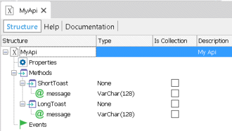
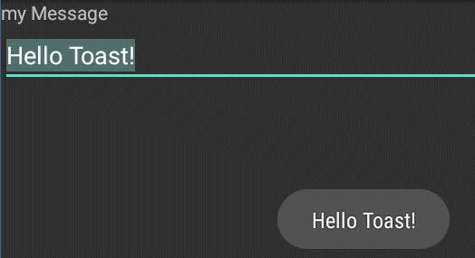

Suppose we want to mimic the GeneXus msg method which shows a notification which automatically fades in and out.
You can create a Native External Object within GeneXus; publish the desired method and properties to be called and do the implementation to integrate to the Android platform.
Below there is a walkthrough you can follow to create an External object for the Android platform.
We will use Toast Notifications for the Android platform which enables sending short and long toasts.
What steps should be followed to add this feature in GeneXus?
Create a New Native External object called MyApi; make sure to set the following property values:
| Android External name | MyApi |
| External Package Name | com.example.samplemodule1 |
1 - This value may change depending on the name used for your library; for this case we will add the component to this existing sample.
Add a new method called ShortToast with the following values:
| Is Static | True |
| External Member Type | Instance |
... and a character parameter using:
| Access Type | In |
| Type | VarChar, Length: 128 |
Add a second method called LongToast with the same parameters, the following figure details the desired result:

Done! this is the declaration needed from the GeneXus perspective.
Once you save the external object, you can use it with the following syntax:
MyApi.ShortToast("Hello Toast!")
MyApi.LongToast(&myMessage)
Now, we have to do some implementation to get this External Object working.
The next step is to implement the MyApi class in a Extension Library. If you want to get started from scratch check this article.
Create a new class MyApi.java on the package com.example.samplemodule:
package com.example.samplemodule;
import android.support.annotation.NonNull;
import android.widget.Toast;
import com.artech.base.services.Services;
import com.artech.externalapi.ExternalApi;
import com.artech.externalapi.ExternalApiResult;
import java.util.List;
public class MyApi extends ExternalApi
{
// GeneXus API Object Name
final static String NAME = "MyApi";
// API Method Names
private static final String METHOD_SHORT_TOAST = "shortToast";
private static final String METHOD_LONG_TOAST = "longToast";
public MyApi(ApiAction action) {
addMethodHandler(METHOD_SHORT_TOAST, 1, mShortToast);
addMethodHandler(METHOD_LONG_TOAST, 1, mLongToast);
}
@SuppressWarnings("FieldCanBeLocal")
private final IMethodInvoker mShortToast = new IMethodInvoker() {
@Override
public @NonNull ExternalApiResult invoke(List<Object> parameters) {
final String parValue = (String) parameters.get(0);
sendToast(parValue,Toast.LENGTH_SHORT);
return ExternalApiResult.SUCCESS_CONTINUE;
}
};
@SuppressWarnings("FieldCanBeLocal")
private final IMethodInvoker mLongToast = new IMethodInvoker() {
@Override
public @NonNull ExternalApiResult invoke(List<Object> parameters) {
final String parValue = (String) parameters.get(0);
sendToast(parValue,Toast.LENGTH_LONG);
return ExternalApiResult.SUCCESS_CONTINUE;
}
};
private void sendToast(final String value, final int duration)
{
Services.Log.debug(NAME,"Toast:'"+value+"' duration:"+duration); //$NON-NLS-1$
getActivity().runOnUiThread(new Runnable() {
@Override
public void run() {
Toast.makeText(getContext(),value,duration).show();
}
});
}
}
Declare your method handlers on the class constructor; you can use the following methods:
for the sample we used addMethodHandler:
addMethodHandler(METHOD_SHORT_TOAST, 1, mShortToast); addMethodHandler(METHOD_LONG_TOAST, 1, mLongToast);
And then define the invoke method and detail the implementation detail; for the case you will need it for the mShortToast and mLongToast handlers:
@SuppressWarnings("FieldCanBeLocal")
private final IMethodInvoker mShortToast = new IMethodInvoker() {
@Override
public @NonNull ExternalApiResult invoke(List<Object> parameters) {
final String parValue = (String) parameters.get(0);
sendToast(parValue,Toast.LENGTH_SHORT);
return ExternalApiResult.SUCCESS_CONTINUE;
}
};
For further detail check this article.
The method arguments for the invoke method are the following:
The developer must get the list of parameters for the method; do the casting needed and delegate to the code that implements the feature. When using basic data type arguments, you can use the toString method to get a list of String parameters:
final String parValue = (String) parameters.get(0);
For those cases, when you are using an SDT or SDT collection object, you will need to cast it to Entity or EntityList (package com.artech.base.model).
In relation to the Toast sample, the external object defines the ShortToast and LongToast methods using string arguments; when executing MyApi.ShortToast("Hello Toast!") the following code will actually be executed:
private void sendToast(final String value, final int duration)
{
Services.Log.debug(NAME,"Toast:'"+value+"' duration:"+duration); //$NON-NLS-1$
getActivity().runOnUiThread(new Runnable() {
@Override
public void run() {
Toast.makeText(getContext(),value,duration).show();
}
});
}
The value variable gets the "Hello Toast!" value and the duration parameter the Toast type (short or long) to execute. The final result is:

You need to initialize the External object, locate the initialize method from Module class and add the following:
ExternalApiDefinition mAPI = new ExternalApiDefinition(
MyApi.NAME,
MyApi.class
);
Notice in this case we are using the SampleModule.java because we are reusing the class from the AndroidExtensionSample and it defines it in the \Android\ModuleClass tag defined in the .library file
<ModuleClass>com.example.samplemodule.SampleModule</ModuleClass>
Locate the GENEXUS_HOME\Libraries\SampleLibrary\SampleLibrary.library file and add a new value for the external object under the Implements tag
<Implements>
...
<ExternalObject name="MyApi"/>
...
</Implements>
Great, you finished the implementation section.
Execute the following command from your Android module location:
gradlew publishDebugPublicationToLocalRepository
After the process finished the library gets compiled and is copied to the GENEXUS_HOME\Android\m2Repository location so it will be included in the next Android compilation. A successful build should look like the following:
>gradlew publishDebugPublicationToLocalRepository :library:androidSourcesJar ... :library:compileReleaseJavaWithJavac Incremental compilation of X classes completed in Y secs. ... :library:bundleRelease :library:publishDebugPublicationToLocalRepository BUILD SUCCESSFUL
Done! You are ready to test your Android MyApi external object.
When using extension points; the Knowledge Base navigator utility is no longer a valid option because it does not contain the platform-specific code added via the defined extensibility points. For those cases use the APK file instead.
When calling an EO from an offline procedure, a few conditions have to be taken into consideration:
The article is valid since GeneXus #15 upgrade #3 or higher versions.
You can add log messages in your extension point to do some basic troubleshooting. For example, you could add the following line in the execute method to log the External Object method called:
android.util.Log.v("GeneXusApplication", "MyApi::"+method);
or you can use the Services.Log GeneXus Helper class from the package com.artech.base.services.Services
Services.Log.debug("GeneXusApplication", "MyApi::"+method); //$NON-NLS-1$
Check the Android logging system for the result; something similar to the following should appear:
V/GeneXusApplication(ProcessID): MyApi::ShortToast
To deploy the external object to a GeneXus installation:
| Backlinks | |
| External Object: Native Object | External Objects for Smart Devices |
| HowTo: Compile Android's FlexibleClient | |
| Toc:Native Mobile Applications Development |